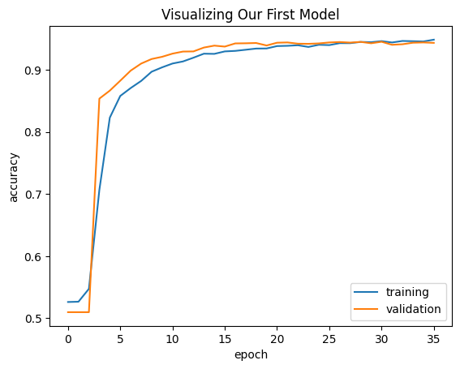
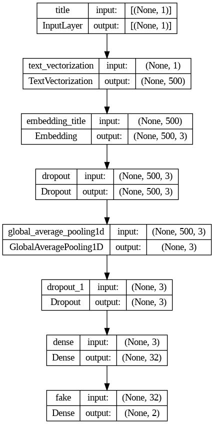
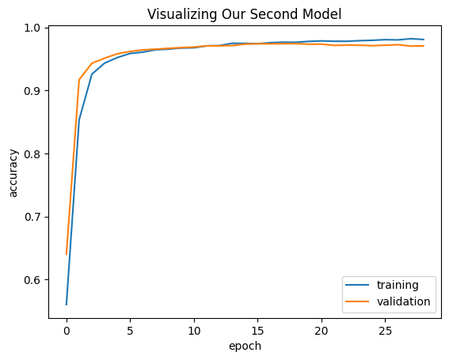
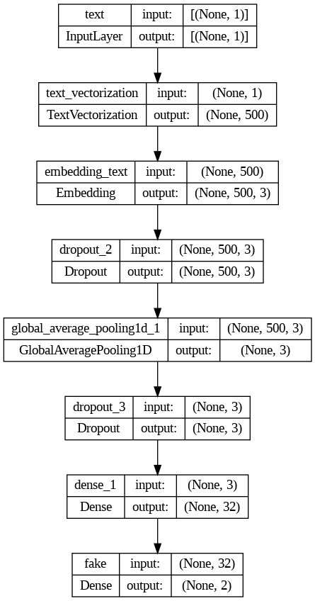
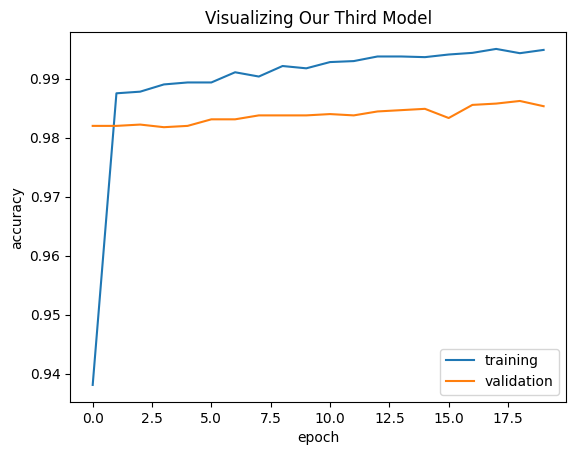
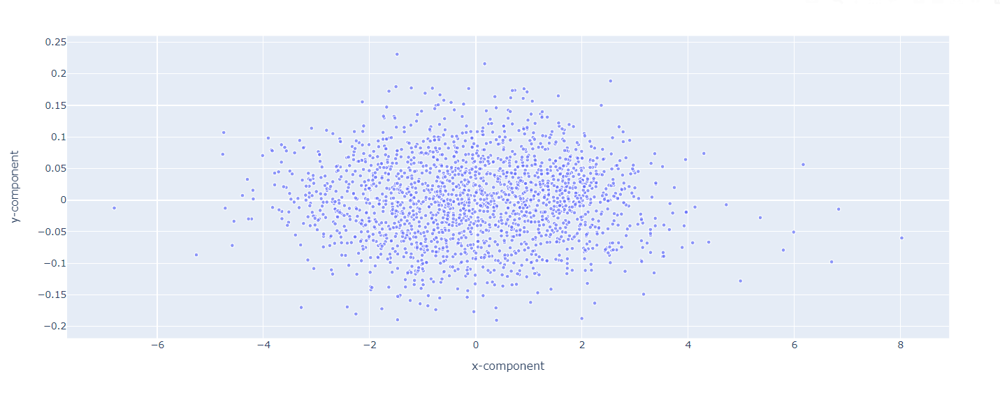

import os
os.environ["KERAS_BACKEND"] = "tensorflow"
import re
import string
import keras
from keras import utils
from keras import layers, losses
from keras.layers import TextVectorization
import tensorflow as tf
import tensorflow_datasets as tfds
import numpy as np
import pandas as pd
import matplotlib.pyplot as pltIntroduction
Today, we’re going to sift through loads of news data in an attempt to create a model that can accurately identify “fake news” from a host of articles. To do this, we’re going to use keras and tensorflow to create models for text classification. We’ll use most of the following imports below:
Dataset Prep
We’re going to take data from the below url, and create a function that creates a dataset from a dataframe made from the csv.
train_url = "https://github.com/PhilChodrow/PIC16b/blob/master/datasets/fake_news_train.csv?raw=true"
df = pd.read_csv(train_url)df| Unnamed: 0 | title | text | fake | |
|---|---|---|---|---|
| 0 | 17366 | Merkel: Strong result for Austria's FPO 'big c... | German Chancellor Angela Merkel said on Monday... | 0 |
| 1 | 5634 | Trump says Pence will lead voter fraud panel | WEST PALM BEACH, Fla.President Donald Trump sa... | 0 |
| 2 | 17487 | JUST IN: SUSPECTED LEAKER and “Close Confidant... | On December 5, 2017, Circa s Sara Carter warne... | 1 |
| 3 | 12217 | Thyssenkrupp has offered help to Argentina ove... | Germany s Thyssenkrupp, has offered assistance... | 0 |
| 4 | 5535 | Trump say appeals court decision on travel ban... | President Donald Trump on Thursday called the ... | 0 |
| ... | ... | ... | ... | ... |
| 22444 | 10709 | ALARMING: NSA Refuses to Release Clinton-Lynch... | If Clinton and Lynch just talked about grandki... | 1 |
| 22445 | 8731 | Can Pence's vow not to sling mud survive a Tru... | () - In 1990, during a close and bitter congre... | 0 |
| 22446 | 4733 | Watch Trump Campaign Try To Spin Their Way Ou... | A new ad by the Hillary Clinton SuperPac Prior... | 1 |
| 22447 | 3993 | Trump celebrates first 100 days as president, ... | HARRISBURG, Pa.U.S. President Donald Trump hit... | 0 |
| 22448 | 12896 | TRUMP SUPPORTERS REACT TO DEBATE: “Clinton New... | MELBOURNE, FL is a town with a population of 7... | 1 |
22449 rows × 4 columns
The two things we want to do before creating the dataset are converting all letters in the dataframe columns “text” and “title” to lowercase and removing stopwords, such as “the,” “at,” and more. To remove stopwords, we need a database of stopwords to watch out for, which is found when importing the nltk library and downloading stopwords.
import nltk
from nltk.corpus import stopwords
nltk.download('stopwords')[nltk_data] Downloading package stopwords to /root/nltk_data...
[nltk_data] Unzipping corpora/stopwords.zip.Truestop = stopwords.words('english')Our function starts by converting the aforementioned text to lowercase using the .lower() function (after .str() to make sure our values are strings). To remove the stopwords, we use the below lambda function in the .apply() function which only keeps words that aren’t in stop, our list of bad words. Finally, we create a tensorflow dataset out of a tuple of dictionaries named based off the column names in our dataframe. For ease of use, we implement the .batch(100) function so that our dataset unloads data 100 elements at a time, allowing for a streamlined training process with negligible accuracy costs.
def make_dataset(df):
df['title'] = df['title'].str.lower()
df['text'] = df['text'].str.lower()
df['title'] = df['title'].apply(lambda x: ' '.join([word for word in x.split() if word not in stop]))
df['text'] = df['text'].apply(lambda x: ' '.join([word for word in x.split() if word not in stop]))
dataset = tf.data.Dataset.from_tensor_slices((
{'title' : df['title'], 'text' : df['text']}, {'fake' : df['fake']}
))
dataset = dataset.shuffle(buffer_size = len(df), reshuffle_each_iteration=False)
dataset = dataset.batch(100)
return datasetWe make a dataset, and want to split it into training and validation. A good split would be 80% train, 20% validation. This process is done below.
dataset = make_dataset(df)train_val_split = int(0.2*len(dataset))
train_ds = dataset.skip(train_val_split)
val_ds = dataset.take(train_val_split)As you may recall, a baseline machine learning model in theory just guesses the majority class in the set. We can calculate the base_rate by counting the number of fake news citings in the training set, and dividing it by the total number of elements in the training set. It turns out fake news citings are the majority (barely). Thus, our base rate is approximately 52%.
num_fake = 0
for _, label in train_ds:
num_fake += np.sum(label['fake'])
base_rate = num_fake/(len(train_ds)*100) # number of fakes over total number of elements in the training set
base_rate0.5247777777777778The next thing to do is prepare a vectorization layer that can be implemented into our models. This is made up of a standardization step, and multiple parameters outlining the total number of words to deal with, the output type, and sequence length. Below, we create a vectorization layer for the “title” aspect of each entry in our dataset. If we wanted to, we could create a vectorization layer for the “title” as well (which is shown in the comments below, it’s pretty much the same thing), but this would be redundant, as we would be vectorizing the same piece of data multiple times over, then embedding it twice as well.
#preparing a text vectorization layer for tf model
size_vocabulary = 2000
def standardization(input_data):
lowercase = tf.strings.lower(input_data)
no_punctuation = tf.strings.regex_replace(lowercase,
'[%s]' % re.escape(string.punctuation),'')
return no_punctuation
title_vectorize_layer = TextVectorization(
standardize=standardization,
max_tokens=size_vocabulary, # only consider this many words
output_mode='int',
output_sequence_length=500)
# text_vectorize_layer = TextVectorization(
# standardize=standardization,
# max_tokens=size_vocabulary,
# output_mode='int',
# output_sequence_length=500)
title_vectorize_layer.adapt(train_ds.map(lambda x, y: x['title']))
# text_vectorize_layer.adapt(train_ds.map(lambda x, y: x['text']))Next, we have to outline the inputs to our function. On one hand, we have the “title” input, everything seen in the title column of our dataset. On the other hand, we have the “text” input. Since they are both long strings, the semantics are the same.
# inputs
title_input = keras.Input(
shape = (1,),
name = "title",
dtype = "string"
)
text_input = keras.Input(
shape = (1,),
name = "text",
dtype = "string"
)Model Creation – Our First, “Title”-based, Model
Today, we want to answer the question “When detecting fake news, is it most effective to focus on only the title of the article, the full text of the article, or both?” We’ll do this by creating three models. Our first model is only going to process features found in the “title” category of our input data. We use the pipeline seen below. The most important parts are the vectorization layer and the embedding layer, as these help us the most by clarifying what is what in the data. We end with an output layer that classifys what each training sample is.
# layers for processing the title
title_features = title_vectorize_layer(title_input)
title_features = layers.Embedding(size_vocabulary, 3, name = "embedding_title")(title_features)
title_features = layers.Dropout(0.2)(title_features)
title_features = layers.GlobalAveragePooling1D()(title_features)
title_features = layers.Dropout(0.2)(title_features)
title_features = layers.Dense(32, activation='relu')(title_features)
title_output = layers.Dense(2, name='fake')(title_features)Instead of using the keras.Sequential API, we use the keras.Functional API to create these models. These consists of inputs which are passed through our features to an output. The hyperparameters and elements such as the optimizer and loss function as the same as always and held constant through our whole experimentation process.
model1 = keras.Model(
inputs = title_input,
outputs = title_output
)
model1.compile(optimizer='adam',
loss=losses.SparseCategoricalCrossentropy(from_logits=True),
metrics=['accuracy'])
model1.summary()Model: "model"
_________________________________________________________________
Layer (type) Output Shape Param #
=================================================================
title (InputLayer) [(None, 1)] 0
text_vectorization (TextVe (None, 500) 0
ctorization)
embedding_title (Embedding (None, 500, 3) 6000
)
dropout (Dropout) (None, 500, 3) 0
global_average_pooling1d ( (None, 3) 0
GlobalAveragePooling1D)
dropout_1 (Dropout) (None, 3) 0
dense (Dense) (None, 32) 128
fake (Dense) (None, 2) 66
=================================================================
Total params: 6194 (24.20 KB)
Trainable params: 6194 (24.20 KB)
Non-trainable params: 0 (0.00 Byte)
_________________________________________________________________As you can see, when just processing the title, we achieve an accuracy of around 92% to 95%. This is pretty good! But I think we can do better.
callback = keras.callbacks.EarlyStopping(monitor='val_loss', patience=5)
history = model1.fit(train_ds,
validation_data=val_ds,
epochs = 50,
callbacks=[callback],
verbose = True)Epoch 1/50
180/180 [==============================] - 23s 91ms/step - loss: 0.6918 - accuracy: 0.5262 - val_loss: 0.6945 - val_accuracy: 0.5098
Epoch 2/50
180/180 [==============================] - 1s 6ms/step - loss: 0.6905 - accuracy: 0.5266 - val_loss: 0.6917 - val_accuracy: 0.5098
Epoch 3/50
180/180 [==============================] - 1s 6ms/step - loss: 0.6828 - accuracy: 0.5473 - val_loss: 0.6748 - val_accuracy: 0.5098
Epoch 4/50
180/180 [==============================] - 1s 8ms/step - loss: 0.6420 - accuracy: 0.7066 - val_loss: 0.5940 - val_accuracy: 0.8536
Epoch 5/50
180/180 [==============================] - 1s 6ms/step - loss: 0.5359 - accuracy: 0.8229 - val_loss: 0.4660 - val_accuracy: 0.8664
Epoch 6/50
180/180 [==============================] - 1s 5ms/step - loss: 0.4290 - accuracy: 0.8579 - val_loss: 0.3704 - val_accuracy: 0.8824
Epoch 7/50
180/180 [==============================] - 1s 6ms/step - loss: 0.3601 - accuracy: 0.8706 - val_loss: 0.3100 - val_accuracy: 0.8987
Epoch 8/50
180/180 [==============================] - 1s 6ms/step - loss: 0.3128 - accuracy: 0.8821 - val_loss: 0.2698 - val_accuracy: 0.9100
Epoch 9/50
180/180 [==============================] - 1s 5ms/step - loss: 0.2782 - accuracy: 0.8969 - val_loss: 0.2389 - val_accuracy: 0.9173
Epoch 10/50
180/180 [==============================] - 1s 6ms/step - loss: 0.2565 - accuracy: 0.9039 - val_loss: 0.2209 - val_accuracy: 0.9209
Epoch 11/50
180/180 [==============================] - 1s 5ms/step - loss: 0.2373 - accuracy: 0.9101 - val_loss: 0.2015 - val_accuracy: 0.9260
Epoch 12/50
180/180 [==============================] - 1s 6ms/step - loss: 0.2252 - accuracy: 0.9134 - val_loss: 0.1895 - val_accuracy: 0.9293
Epoch 13/50
180/180 [==============================] - 1s 7ms/step - loss: 0.2101 - accuracy: 0.9194 - val_loss: 0.1823 - val_accuracy: 0.9296
Epoch 14/50
180/180 [==============================] - 2s 9ms/step - loss: 0.1986 - accuracy: 0.9259 - val_loss: 0.1724 - val_accuracy: 0.9358
Epoch 15/50
180/180 [==============================] - 2s 10ms/step - loss: 0.1888 - accuracy: 0.9256 - val_loss: 0.1665 - val_accuracy: 0.9389
Epoch 16/50
180/180 [==============================] - 2s 11ms/step - loss: 0.1833 - accuracy: 0.9296 - val_loss: 0.1636 - val_accuracy: 0.9373
Epoch 17/50
180/180 [==============================] - 1s 6ms/step - loss: 0.1788 - accuracy: 0.9304 - val_loss: 0.1575 - val_accuracy: 0.9424
Epoch 18/50
180/180 [==============================] - 1s 5ms/step - loss: 0.1725 - accuracy: 0.9323 - val_loss: 0.1542 - val_accuracy: 0.9427
Epoch 19/50
180/180 [==============================] - 1s 6ms/step - loss: 0.1670 - accuracy: 0.9341 - val_loss: 0.1518 - val_accuracy: 0.9431
Epoch 20/50
180/180 [==============================] - 1s 6ms/step - loss: 0.1633 - accuracy: 0.9343 - val_loss: 0.1560 - val_accuracy: 0.9391
Epoch 21/50
180/180 [==============================] - 1s 6ms/step - loss: 0.1609 - accuracy: 0.9382 - val_loss: 0.1488 - val_accuracy: 0.9436
Epoch 22/50
180/180 [==============================] - 1s 7ms/step - loss: 0.1571 - accuracy: 0.9386 - val_loss: 0.1473 - val_accuracy: 0.9440
Epoch 23/50
180/180 [==============================] - 2s 8ms/step - loss: 0.1536 - accuracy: 0.9395 - val_loss: 0.1484 - val_accuracy: 0.9420
Epoch 24/50
180/180 [==============================] - 1s 7ms/step - loss: 0.1531 - accuracy: 0.9368 - val_loss: 0.1479 - val_accuracy: 0.9418
Epoch 25/50
180/180 [==============================] - 1s 5ms/step - loss: 0.1477 - accuracy: 0.9403 - val_loss: 0.1457 - val_accuracy: 0.9424
Epoch 26/50
180/180 [==============================] - 1s 6ms/step - loss: 0.1509 - accuracy: 0.9397 - val_loss: 0.1442 - val_accuracy: 0.9440
Epoch 27/50
180/180 [==============================] - 1s 6ms/step - loss: 0.1441 - accuracy: 0.9429 - val_loss: 0.1433 - val_accuracy: 0.9447
Epoch 28/50
180/180 [==============================] - 1s 6ms/step - loss: 0.1426 - accuracy: 0.9428 - val_loss: 0.1446 - val_accuracy: 0.9438
Epoch 29/50
180/180 [==============================] - 1s 6ms/step - loss: 0.1405 - accuracy: 0.9448 - val_loss: 0.1435 - val_accuracy: 0.9449
Epoch 30/50
180/180 [==============================] - 1s 6ms/step - loss: 0.1391 - accuracy: 0.9444 - val_loss: 0.1449 - val_accuracy: 0.9427
Epoch 31/50
180/180 [==============================] - 1s 5ms/step - loss: 0.1380 - accuracy: 0.9461 - val_loss: 0.1426 - val_accuracy: 0.9451
Epoch 32/50
180/180 [==============================] - 1s 6ms/step - loss: 0.1356 - accuracy: 0.9440 - val_loss: 0.1491 - val_accuracy: 0.9402
Epoch 33/50
180/180 [==============================] - 2s 12ms/step - loss: 0.1335 - accuracy: 0.9464 - val_loss: 0.1490 - val_accuracy: 0.9411
Epoch 34/50
180/180 [==============================] - 1s 6ms/step - loss: 0.1335 - accuracy: 0.9460 - val_loss: 0.1470 - val_accuracy: 0.9436
Epoch 35/50
180/180 [==============================] - 1s 6ms/step - loss: 0.1345 - accuracy: 0.9456 - val_loss: 0.1438 - val_accuracy: 0.9440
Epoch 36/50
180/180 [==============================] - 1s 6ms/step - loss: 0.1307 - accuracy: 0.9485 - val_loss: 0.1473 - val_accuracy: 0.9433/usr/local/lib/python3.10/dist-packages/keras/src/engine/functional.py:642: UserWarning: Input dict contained keys ['text'] which did not match any model input. They will be ignored by the model.
inputs = self._flatten_to_reference_inputs(inputs)plt.plot(history.history["accuracy"], label = "training")
plt.plot(history.history["val_accuracy"], label = "validation")
plt.gca().set(xlabel = "epoch", ylabel = "accuracy")
plt.legend()
plt.title("Visualizing Our First Model")Text(0.5, 1.0, 'Visualizing Our First Model')
Before we jump into the next model, here’s a streamlined look at the current one. It’s really not that complex, but it more than gets the job done.
from keras import utils
utils.plot_model(model1, "model1.png",
show_shapes=True,
show_layer_names=True)
A Model That Only Looks at Text Data
Now we’ll tackle the second idea posed in the question – how good is a model that only processes the text of an article. I hypothesize that this will be a little bit better than just looking at the title. The body of the article is a lot longer, and gives us a better idea of what’s going on. We use the same model structure for this model, only changing the input and embedding layer.
# layers for processing the text
text_features = title_vectorize_layer(text_input)
text_features = layers.Embedding(size_vocabulary, 3, name = "embedding_text")(text_features)
text_features = layers.Dropout(0.2)(text_features)
text_features = layers.GlobalAveragePooling1D()(text_features)
text_features = layers.Dropout(0.2)(text_features)
text_features = layers.Dense(32, activation='relu')(text_features)
text_output = layers.Dense(2, name='fake')(text_features)model2 = keras.Model(
inputs = text_input,
outputs = text_output
)
model2.compile(optimizer='adam',
loss=losses.SparseCategoricalCrossentropy(from_logits=True),
metrics=['accuracy'])
model2.summary()Model: "model_1"
_________________________________________________________________
Layer (type) Output Shape Param #
=================================================================
text (InputLayer) [(None, 1)] 0
text_vectorization (TextVe (None, 500) 0
ctorization)
embedding_text (Embedding) (None, 500, 3) 6000
dropout_2 (Dropout) (None, 500, 3) 0
global_average_pooling1d_1 (None, 3) 0
(GlobalAveragePooling1D)
dropout_3 (Dropout) (None, 3) 0
dense_1 (Dense) (None, 32) 128
fake (Dense) (None, 2) 66
=================================================================
Total params: 6194 (24.20 KB)
Trainable params: 6194 (24.20 KB)
Non-trainable params: 0 (0.00 Byte)
_________________________________________________________________At its peak, this model reaches around 97% accuracy, which is incrementally better than our original one. So my hypothesis was correct! Still, I think we can do even better.
callback = keras.callbacks.EarlyStopping(monitor='val_loss', patience=5)
history = model2.fit(train_ds,
validation_data=val_ds,
epochs = 50,
callbacks=[callback],
verbose = True)Epoch 1/50
180/180 [==============================] - 18s 92ms/step - loss: 0.6766 - accuracy: 0.5603 - val_loss: 0.6369 - val_accuracy: 0.6402
Epoch 2/50
180/180 [==============================] - 2s 12ms/step - loss: 0.5056 - accuracy: 0.8534 - val_loss: 0.3630 - val_accuracy: 0.9171
Epoch 3/50
180/180 [==============================] - 2s 11ms/step - loss: 0.2993 - accuracy: 0.9259 - val_loss: 0.2372 - val_accuracy: 0.9431
Epoch 4/50
180/180 [==============================] - 2s 11ms/step - loss: 0.2190 - accuracy: 0.9435 - val_loss: 0.1884 - val_accuracy: 0.9513
Epoch 5/50
180/180 [==============================] - 3s 15ms/step - loss: 0.1835 - accuracy: 0.9523 - val_loss: 0.1628 - val_accuracy: 0.9582
Epoch 6/50
180/180 [==============================] - 4s 20ms/step - loss: 0.1601 - accuracy: 0.9588 - val_loss: 0.1463 - val_accuracy: 0.9620
Epoch 7/50
180/180 [==============================] - 2s 13ms/step - loss: 0.1445 - accuracy: 0.9609 - val_loss: 0.1366 - val_accuracy: 0.9644
Epoch 8/50
180/180 [==============================] - 2s 11ms/step - loss: 0.1318 - accuracy: 0.9646 - val_loss: 0.1285 - val_accuracy: 0.9656
Epoch 9/50
180/180 [==============================] - 2s 11ms/step - loss: 0.1242 - accuracy: 0.9656 - val_loss: 0.1227 - val_accuracy: 0.9669
Epoch 10/50
180/180 [==============================] - 2s 11ms/step - loss: 0.1169 - accuracy: 0.9674 - val_loss: 0.1187 - val_accuracy: 0.9680
Epoch 11/50
180/180 [==============================] - 3s 17ms/step - loss: 0.1111 - accuracy: 0.9677 - val_loss: 0.1152 - val_accuracy: 0.9689
Epoch 12/50
180/180 [==============================] - 2s 11ms/step - loss: 0.1051 - accuracy: 0.9708 - val_loss: 0.1121 - val_accuracy: 0.9709
Epoch 13/50
180/180 [==============================] - 2s 11ms/step - loss: 0.0993 - accuracy: 0.9712 - val_loss: 0.1097 - val_accuracy: 0.9709
Epoch 14/50
180/180 [==============================] - 2s 11ms/step - loss: 0.0944 - accuracy: 0.9749 - val_loss: 0.1076 - val_accuracy: 0.9713
Epoch 15/50
180/180 [==============================] - 3s 14ms/step - loss: 0.0914 - accuracy: 0.9747 - val_loss: 0.1063 - val_accuracy: 0.9736
Epoch 16/50
180/180 [==============================] - 3s 15ms/step - loss: 0.0877 - accuracy: 0.9743 - val_loss: 0.1048 - val_accuracy: 0.9742
Epoch 17/50
180/180 [==============================] - 2s 13ms/step - loss: 0.0851 - accuracy: 0.9759 - val_loss: 0.1042 - val_accuracy: 0.9740
Epoch 18/50
180/180 [==============================] - 2s 11ms/step - loss: 0.0799 - accuracy: 0.9766 - val_loss: 0.1024 - val_accuracy: 0.9742
Epoch 19/50
180/180 [==============================] - 2s 11ms/step - loss: 0.0795 - accuracy: 0.9765 - val_loss: 0.1021 - val_accuracy: 0.9742
Epoch 20/50
180/180 [==============================] - 3s 17ms/step - loss: 0.0754 - accuracy: 0.9779 - val_loss: 0.1024 - val_accuracy: 0.9736
Epoch 21/50
180/180 [==============================] - 2s 13ms/step - loss: 0.0748 - accuracy: 0.9787 - val_loss: 0.1016 - val_accuracy: 0.9736
Epoch 22/50
180/180 [==============================] - 2s 11ms/step - loss: 0.0715 - accuracy: 0.9782 - val_loss: 0.1031 - val_accuracy: 0.9716
Epoch 23/50
180/180 [==============================] - 2s 11ms/step - loss: 0.0685 - accuracy: 0.9781 - val_loss: 0.1023 - val_accuracy: 0.9720
Epoch 24/50
180/180 [==============================] - 2s 11ms/step - loss: 0.0682 - accuracy: 0.9791 - val_loss: 0.1013 - val_accuracy: 0.9718
Epoch 25/50
180/180 [==============================] - 2s 13ms/step - loss: 0.0672 - accuracy: 0.9797 - val_loss: 0.1054 - val_accuracy: 0.9711
Epoch 26/50
180/180 [==============================] - 3s 15ms/step - loss: 0.0642 - accuracy: 0.9806 - val_loss: 0.1023 - val_accuracy: 0.9718
Epoch 27/50
180/180 [==============================] - 2s 11ms/step - loss: 0.0635 - accuracy: 0.9803 - val_loss: 0.1019 - val_accuracy: 0.9727
Epoch 28/50
180/180 [==============================] - 3s 15ms/step - loss: 0.0604 - accuracy: 0.9822 - val_loss: 0.1042 - val_accuracy: 0.9704
Epoch 29/50
180/180 [==============================] - 3s 16ms/step - loss: 0.0621 - accuracy: 0.9809 - val_loss: 0.1049 - val_accuracy: 0.9709/usr/local/lib/python3.10/dist-packages/keras/src/engine/functional.py:642: UserWarning: Input dict contained keys ['title'] which did not match any model input. They will be ignored by the model.
inputs = self._flatten_to_reference_inputs(inputs)plt.plot(history.history["accuracy"], label = "training")
plt.plot(history.history["val_accuracy"], label = "validation")
plt.gca().set(xlabel = "epoch", ylabel = "accuracy")
plt.legend()
plt.title("Visualizing Our Second Model")Text(0.5, 1.0, 'Visualizing Our Second Model')
As I said before, the backbone of this model is the same as the model processing the titles.
from keras import utils
utils.plot_model(model2, "model1.png",
show_shapes=True,
show_layer_names=True)
An All-Encompassing Model
Our final model should be the best. It takes into account both the title data and text data, and should provide us with the fullest picture of what’s happening in each article. In this model, we concatenate the features of both other models in order to process the title and text data in tandem before finally feeding to a dense layer for classification.
# processing both the title and text together
main = layers.concatenate([title_features, text_features], axis = 1)
output = layers.Dense(2, name = 'fake')(main)model3 = keras.Model(
inputs = [title_input, text_input],
outputs = output
)
model3.compile(optimizer='adam',
loss=losses.SparseCategoricalCrossentropy(from_logits=True),
metrics=['accuracy'])
model3.summary()Model: "model_2"
__________________________________________________________________________________________________
Layer (type) Output Shape Param # Connected to
==================================================================================================
title (InputLayer) [(None, 1)] 0 []
text (InputLayer) [(None, 1)] 0 []
text_vectorization (TextVe (None, 500) 0 ['title[0][0]',
ctorization) 'text[0][0]']
embedding_title (Embedding (None, 500, 3) 6000 ['text_vectorization[0][0]']
)
embedding_text (Embedding) (None, 500, 3) 6000 ['text_vectorization[1][0]']
dropout (Dropout) (None, 500, 3) 0 ['embedding_title[0][0]']
dropout_2 (Dropout) (None, 500, 3) 0 ['embedding_text[0][0]']
global_average_pooling1d ( (None, 3) 0 ['dropout[0][0]']
GlobalAveragePooling1D)
global_average_pooling1d_1 (None, 3) 0 ['dropout_2[0][0]']
(GlobalAveragePooling1D)
dropout_1 (Dropout) (None, 3) 0 ['global_average_pooling1d[0][
0]']
dropout_3 (Dropout) (None, 3) 0 ['global_average_pooling1d_1[0
][0]']
dense (Dense) (None, 32) 128 ['dropout_1[0][0]']
dense_1 (Dense) (None, 32) 128 ['dropout_3[0][0]']
concatenate (Concatenate) (None, 64) 0 ['dense[0][0]',
'dense_1[0][0]']
fake (Dense) (None, 2) 130 ['concatenate[0][0]']
==================================================================================================
Total params: 12386 (48.38 KB)
Trainable params: 12386 (48.38 KB)
Non-trainable params: 0 (0.00 Byte)
__________________________________________________________________________________________________This model reaches 98%, and almost 99% validation accuracy. It is truly the culmination of all the work we’ve done so far. It is almost scarily accuracte. It could even be better than you or me!
callback = keras.callbacks.EarlyStopping(monitor='val_loss', patience=5)
history = model3.fit(train_ds,
validation_data=val_ds,
epochs = 50,
callbacks=[callback],
verbose = True)Epoch 1/50
180/180 [==============================] - 21s 107ms/step - loss: 0.3944 - accuracy: 0.9381 - val_loss: 0.2057 - val_accuracy: 0.9820
Epoch 2/50
180/180 [==============================] - 2s 12ms/step - loss: 0.1435 - accuracy: 0.9875 - val_loss: 0.1038 - val_accuracy: 0.9820
Epoch 3/50
180/180 [==============================] - 2s 13ms/step - loss: 0.0856 - accuracy: 0.9878 - val_loss: 0.0774 - val_accuracy: 0.9822
Epoch 4/50
180/180 [==============================] - 2s 13ms/step - loss: 0.0647 - accuracy: 0.9890 - val_loss: 0.0656 - val_accuracy: 0.9818
Epoch 5/50
180/180 [==============================] - 3s 18ms/step - loss: 0.0528 - accuracy: 0.9894 - val_loss: 0.0593 - val_accuracy: 0.9820
Epoch 6/50
180/180 [==============================] - 3s 14ms/step - loss: 0.0462 - accuracy: 0.9894 - val_loss: 0.0556 - val_accuracy: 0.9831
Epoch 7/50
180/180 [==============================] - 2s 13ms/step - loss: 0.0394 - accuracy: 0.9911 - val_loss: 0.0534 - val_accuracy: 0.9831
Epoch 8/50
180/180 [==============================] - 3s 14ms/step - loss: 0.0378 - accuracy: 0.9904 - val_loss: 0.0513 - val_accuracy: 0.9838
Epoch 9/50
180/180 [==============================] - 3s 19ms/step - loss: 0.0337 - accuracy: 0.9921 - val_loss: 0.0498 - val_accuracy: 0.9838
Epoch 10/50
180/180 [==============================] - 2s 13ms/step - loss: 0.0321 - accuracy: 0.9918 - val_loss: 0.0487 - val_accuracy: 0.9838
Epoch 11/50
180/180 [==============================] - 2s 13ms/step - loss: 0.0283 - accuracy: 0.9928 - val_loss: 0.0484 - val_accuracy: 0.9840
Epoch 12/50
180/180 [==============================] - 2s 13ms/step - loss: 0.0265 - accuracy: 0.9930 - val_loss: 0.0473 - val_accuracy: 0.9838
Epoch 13/50
180/180 [==============================] - 3s 16ms/step - loss: 0.0244 - accuracy: 0.9938 - val_loss: 0.0465 - val_accuracy: 0.9844
Epoch 14/50
180/180 [==============================] - 2s 13ms/step - loss: 0.0227 - accuracy: 0.9938 - val_loss: 0.0463 - val_accuracy: 0.9847
Epoch 15/50
180/180 [==============================] - 3s 14ms/step - loss: 0.0229 - accuracy: 0.9936 - val_loss: 0.0462 - val_accuracy: 0.9849
Epoch 16/50
180/180 [==============================] - 2s 13ms/step - loss: 0.0200 - accuracy: 0.9941 - val_loss: 0.0480 - val_accuracy: 0.9833
Epoch 17/50
180/180 [==============================] - 3s 17ms/step - loss: 0.0209 - accuracy: 0.9944 - val_loss: 0.0466 - val_accuracy: 0.9856
Epoch 18/50
180/180 [==============================] - 2s 13ms/step - loss: 0.0184 - accuracy: 0.9950 - val_loss: 0.0470 - val_accuracy: 0.9858
Epoch 19/50
180/180 [==============================] - 2s 13ms/step - loss: 0.0188 - accuracy: 0.9943 - val_loss: 0.0475 - val_accuracy: 0.9862
Epoch 20/50
180/180 [==============================] - 2s 12ms/step - loss: 0.0172 - accuracy: 0.9949 - val_loss: 0.0466 - val_accuracy: 0.9853plt.plot(history.history["accuracy"], label = "training")
plt.plot(history.history["val_accuracy"], label = "validation")
plt.gca().set(xlabel = "epoch", ylabel = "accuracy")
plt.legend()
plt.title("Visualizing Our Third Model")Text(0.5, 1.0, 'Visualizing Our Third Model')
This model is more complex that both its predecessors because it’s a combination of them. It has about two times as many parameters and two times as many layers, with two separate embeddings for both title and text.
from keras import utils
utils.plot_model(model2, "model1.png",
show_shapes=True,
show_layer_names=True)Testing
Of course, we want to see how our model works in a test run. Consider the following dataframe full of test data. Using the function we defined earlier, we can create a test dataset to evaluate our final model on.
test_url = "https://github.com/PhilChodrow/PIC16b/blob/master/datasets/fake_news_test.csv?raw=true"
test_df = pd.read_csv(test_url)test_ds = make_dataset(test_df)It achieves around 98.6% validation accuracy. Pretty neat!
_, accuracy = model3.evaluate(test_ds)
print(f'Accuracy on test set: {accuracy}')225/225 [==============================] - 3s 12ms/step - loss: 0.0453 - accuracy: 0.9861
Accuracy on test set: 0.9861463904380798Considering the Embeddings
Now, lets consider how the model actualyl decides how to embed information. Below, we look at the embeddings of the title data.
from sklearn.decomposition import PCA
import matplotlib.pyplot as plt
weights = model3.get_layer('embedding_title').get_weights()[0] # get the weights from the embedding layer (only title here)
vocab = title_vectorize_layer.get_vocabulary() # retreieve all the words so visualization can be interactive
pca = PCA(n_components=2) # reducing to 2 dimensions for easy visualization
weights = pca.fit_transform(weights)
embedding_df = pd.DataFrame({
'word' : vocab,
'x-component' : weights[:,0],
'y-component' : weights[:,1]
})import plotly.express as px
# make scatter plot of embeddings
fig = px.scatter(embedding_df,
x = "x-component",
y = "y-component",
size = list(np.ones(len(embedding_df))),
size_max = 5,
hover_name = "word")
fig.show()
Some interesting patters: At the farthest left in our model, we see words such as Trump’s, Obama’s, and Hilary. It’s quite self-explanatory why these go together. In the region [-5, -3] x [-0.15, 0], we see multiple places, like Australia, Germanys, and Kenya, next to this rectangle, we see other tangential words like Australian, and kremlin. Overall, the model seems to classify things based off a clear pattern. It’s still kind of hard to see how it makes these decision, but you can get a good idea of it by visualizing the embeddings.